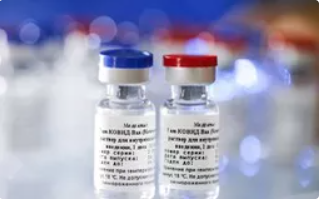

VIDEO NỔI BẬT

Giá xuất khẩu vaccine Sputnik V của Nga ít nhất 10 USD cho hai liều
Thế giới - 13/08/2020VTV.vn - Chủ tịch Hội đồng quản trị công ty R-Pharm, ông Alexey Repik cho biết giá xuất khẩu vaccine ngừa virus SARS-CoV-2 của Nga ít nhất là 10 USD cho hai liều.
Trước đó, ngày 11/8, Tổng thống Nga Vladimir Putin thông báo nước này đã đăng ký loại vaccine đầu tiên trên thế giới chống COVID-19. Vaccine do Trung tâm Nghiên cứu Dịch tễ học và Vi sinh học Quốc gia mang tên Gamaley (SIC) và Viện Nghiên cứu Trung ương 27 (TsNII) thuộc Bộ Quốc phòng Nga hợp tác phát triển, được đặt tên là Sputnik V và có dạng dung dịch tiêm. Lô vaccine đầu tiên sẽ được đưa ra sử dụng trong vòng 2 tuần nữa và việc đưa vào sản xuất hàng loạt sẽ sớm bắt đầu.
Trong một diễn biến khác, truyền thông Nga cho biết, Phó Thủ tướng kiêm Đại diện toàn quyền của Tổng thống LB Nga ở Khu liên bang Viễn Đông, ông Yuri Trutnev, đã xét nghiệp dương tính với virus SARS-CoV-2.
Tình yêu và tham vọng - Tập 45: Không phải Linh, đây mới là người phá đám cưới tương lai của Minh - Tuệ Lâm
13/08/2020 07:21VTV.vn - Phong đã mượn được tay Kỳ Lân để phá chuyện tình của Minh và Tuệ Lâm. Trong khi đó, chính mẹ Minh cũng nhận ra bà có lỗi khi ép con phải cưới Tuệ Lâm.
Mở đầu tập 45 phim Tình yêu và tham vọng, Đại Cán (Văn Bích), sau khi bị đuổi khỏi Hoàng Thổ và cũng không được làm việc tại Bách Hợp, đã bắt đầu đi "đâm bị thóc, chọc bị gạo" ở cả hai bên để tìm cơ hội mới cho mình.
Đại Cán tiết lộ cho Tuệ Lâm (Lã Thanh Huyền) rằng chính Linh (Diễm My) là người tác động khiến Minh (Nhan Phúc Vinh) rút khỏi dự án ở khu đô thị thông minh. Tất nhiên, Tuệ Lâm như phát điên khi nghe tin này, bởi Linh đã ra khỏi Hoàng Thổ rồi mà vẫn "dính mũi" vào quyết định của công ty. Tuệ Lâm uống rượu về nhà trong bộ dạng say khướt, rồi kể lại chuyện này với bố. Bố của cô thực sự lo lắng cho con gái khi chồng sắp cưới vẫn chưa chấm dứt quan hệ với Linh.
[INFOGRAPHIC] Đề xuất biểu giá bán lẻ điện mới
13/08/2020 08:10VTV.vn - Bộ Công Thương đã chính thức đưa ra dự thảo Quyết định của Thủ tướng Chính phủ quy định về cơ cấu biểu giá bán lẻ điện để sửa đổi Quyết định 28/2014.
Theo Bộ Công Thương, nếu phương án mới được áp dụng, khách hàng được quyền chọn áp dụng giá sinh hoạt 5 bậc hoặc giá bán lẻ điện một giá. Thời gian tối thiểu khi khách hàng thay đổi từ giá bán lẻ điện 5 bậc sang điện một giá (hoặc ngược lại) là một năm.
Bộ Công Thương đang tiếp tục lấy ý kiến về biểu giá điện trong tháng 8 và sau tháng 8 trình Chính phủ để sẽ chính thức áp dụng từ đầu năm 2021.